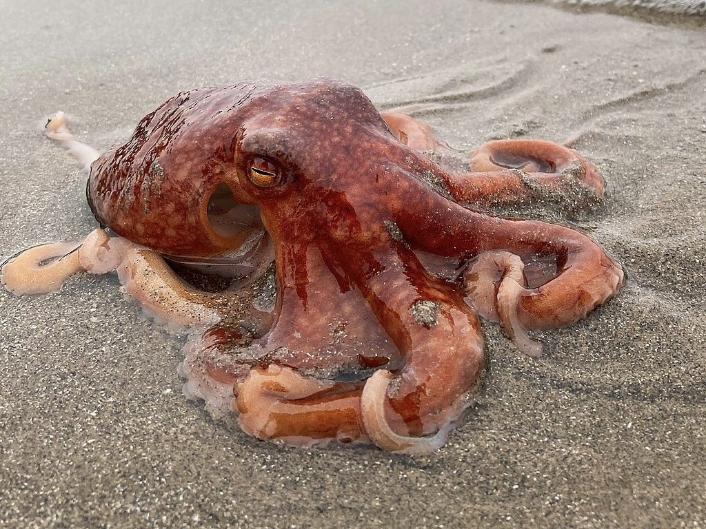
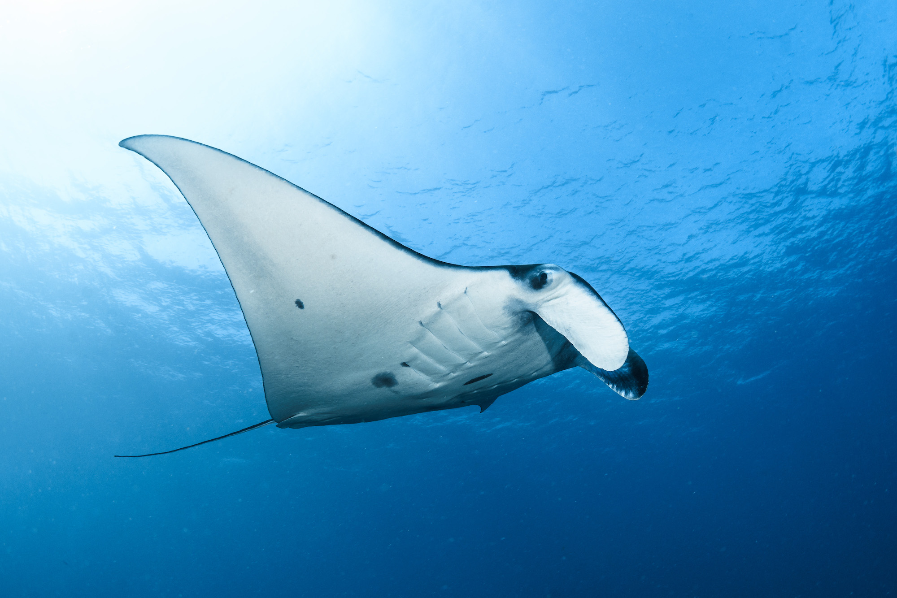
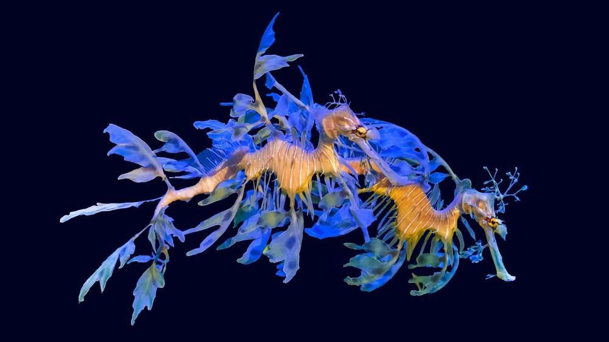
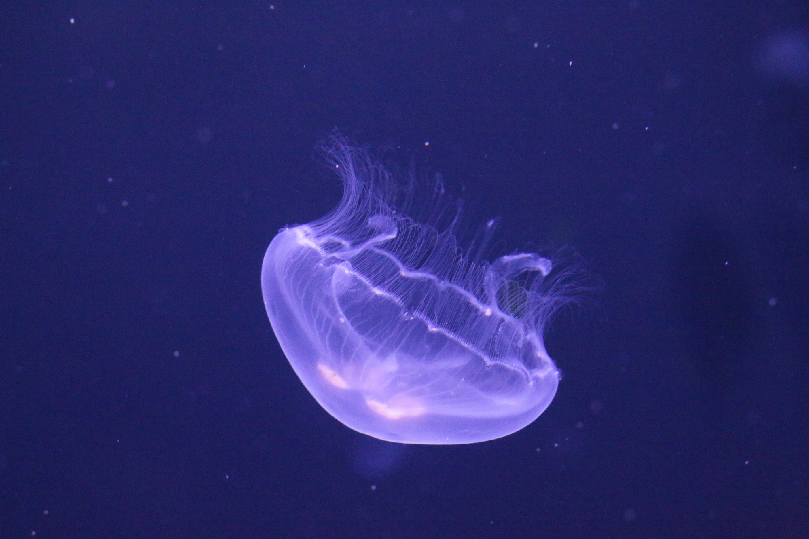
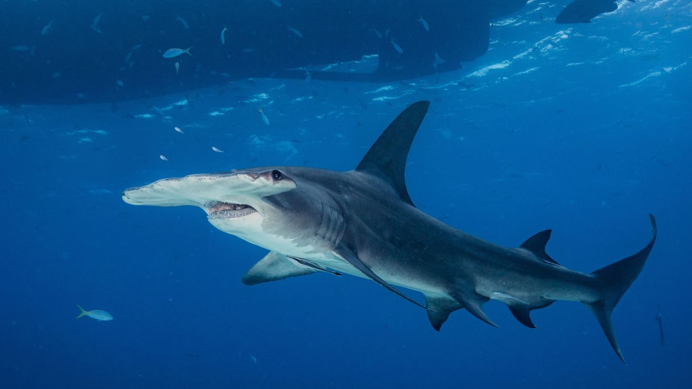

A tengerek és óceánok különleges lakói.

Az óriáspolip a világ egyik legérdekesebb tengeri élőlénye. A fejlábúak közé tartozik, és nyolc erős karjával képes megragadni a zsákmányát. Egyes példányai akár 5 méteres karfesztávolságot is elérhetnek, így a legnagyobb polipfajok közé tartoznak.
Az óriáspolip rendkívül intelligens állat. Kísérletek során megfigyelték, hogy képes egyszerű problémákat megoldani, tárgyakat felismerni és emlékezni korábbi tapasztalataira. Szükség esetén színét és mintázatát is képes megváltoztatni, így elrejtőzhet a ragadozók elől.
Táplálékát főként rákok, kagylók, csigák és kisebb halak alkotják. Vadászat közben karjaival ragadja meg áldozatát, majd erős csőrével feltöri annak páncélját. Ha veszélyben érzi magát, tintafelhőt bocsáthat ki, amely megzavarja az üldözőjét és lehetőséget ad a menekülésre.

A manta rája az óceánok egyik legimpozánsabb élőlénye. Szárnyszerű mellúszói segítségével kecsesen siklik a vízben. Egyes egyedek szárnyfesztávolsága meghaladhatja a hét métert is, ezért a világ legnagyobb rájái közé tartoznak.
Annak ellenére, hogy hatalmas méretű, teljesen ártalmatlan az emberre. Nem ragadozó módon táplálkozik, hanem a vízből szűri ki a planktonokat és az apró élőlényeket. Táplálkozás közben gyakran látványos köröket ír le a vízben.
A manta ráják trópusi és szubtrópusi tengerekben élnek. Rendkívül intelligens állatok, és a kutatók szerint képesek felismerni saját magukat bizonyos helyzetekben. Sajnos a túlhalászat és az óceánok szennyezése veszélyezteti a fennmaradásukat.

A leveles sárkányhal a világ egyik legkülönlegesebb külsejű tengeri állata. Ausztrália déli partvidékének közelében él, és a csikóhalak közeli rokona. Testét levélszerű kinövések borítják, amelyek tökéletes álcázást biztosítanak számára.
Ezek a levélszerű részek valójában nem segítik az úszást, csupán a rejtőzködést szolgálják. A tengeri növények között szinte lehetetlen észrevenni, mivel úgy néz ki, mintha egy sodródó hínárdarab lenne.
Apró rákfélékkel, planktonokkal és más kis tengeri élőlényekkel táplálkozik. Nincs foga, ezért a táplálékot hosszú csőszerű szájával szippantja fel. Ritkasága és különleges megjelenése miatt a búvárok egyik kedvenc megfigyelési célpontja.

A holdmedúza a világ tengereinek egyik legismertebb medúzája. Testének nagy részét víz alkotja, ezért áttetsző és szinte lebegni látszik az óceánban. Mozgását lassú összehúzódásokkal végzi, miközben az áramlatok is sodorják.
Karjain és csápjain apró csalánsejtek találhatók, amelyekkel megbénítja a zsákmányát. Főként planktonokat, apró rákokat és halivadékokat fogyaszt. Az ember számára általában nem jelent komoly veszélyt.
A medúzák a Föld legrégebbi állatcsoportjai közé tartoznak, hiszen több százmillió éve léteznek. Egyszerű felépítésük ellenére rendkívül sikeresen alkalmazkodtak a tengeri környezethez.

A pörölycápa különleges fejformájáról kapta a nevét. A fej két oldalán helyezkednek el a szemei, ami szélesebb látóteret biztosít számára, mint a legtöbb más cápafajnál.
A meleg tengerek lakója, és kiváló ragadozó. Halakat, rájákat, tintahalakat és különféle tengeri állatokat fogyaszt. Erősen fejlett érzékszervei segítségével még a homok alá bújt zsákmányt is képes érzékelni.
Bár megjelenése félelmetes, az emberrel való találkozások ritkák. A pörölycápák fontos szerepet töltenek be a tengeri ökoszisztémában, mivel segítenek fenntartani a különböző halfajok állományának egyensúlyát.